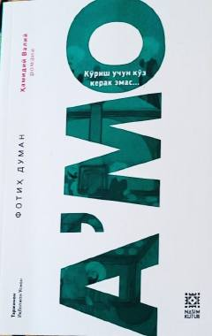

AKKo'z bilan emas, qalb bilan ko'rishga undovchi ilhomli kitob.
Turk yozuvchisi Fotih Dumanning ushbu kitobi Ikboljon Usmon tomonidan o'zbek tiliga tarjima qilingan. Muallif yozuvchilik kasbini muqaddas deb bilib, hayot ma'nosi, ichki ko'rish va ruhiy uyg'onish haqida o'z fikrlarini o'quvchi bilan samimiy suhbat tarzida baham ko'radi. Kitob insonning ko'z bilan emas, qalb bilan ko'rishga da'vat etadi.